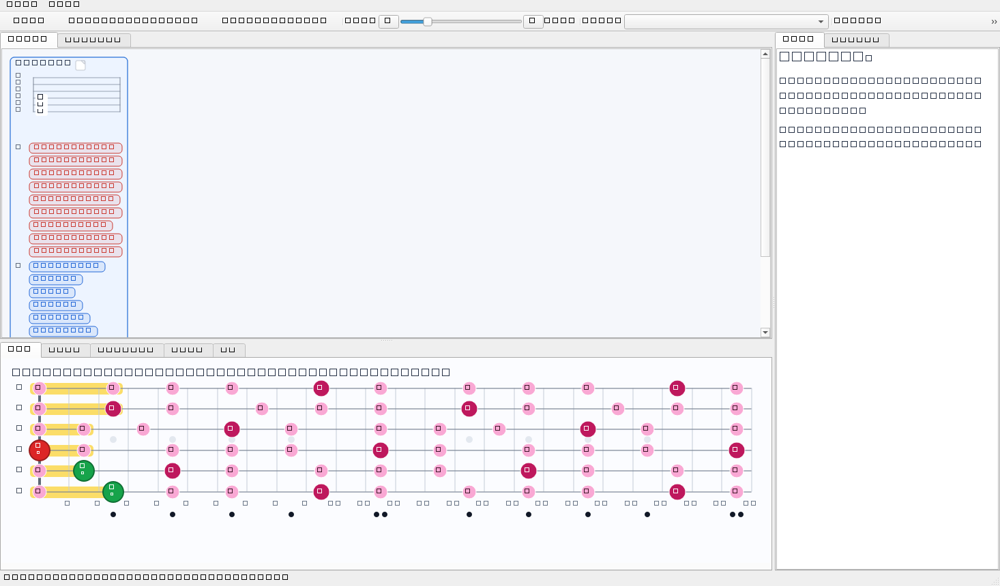
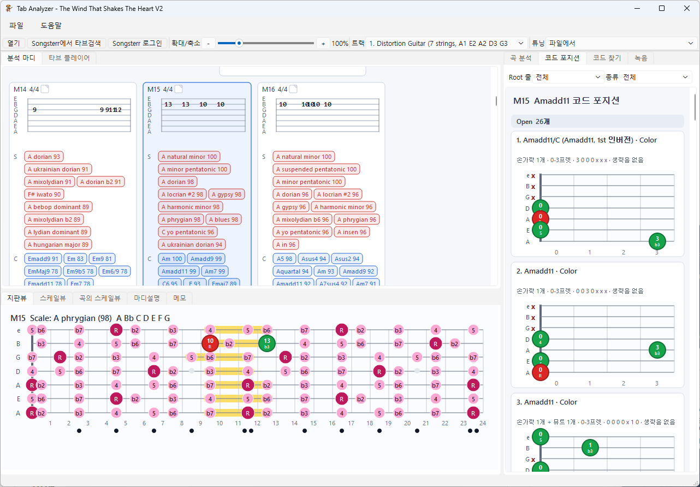
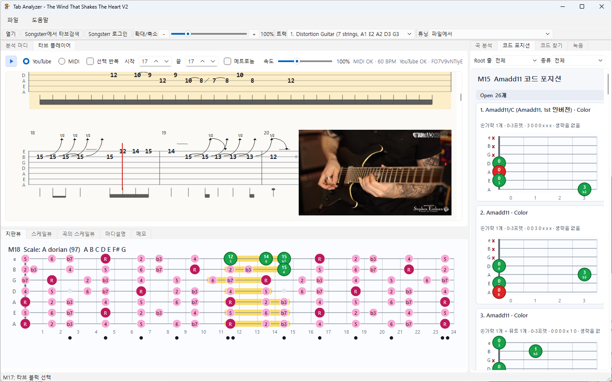
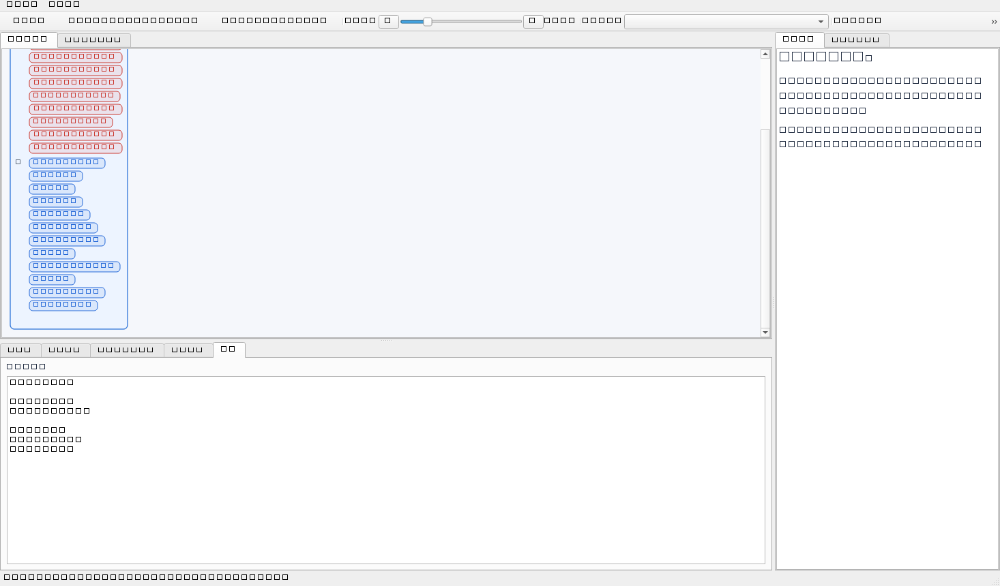
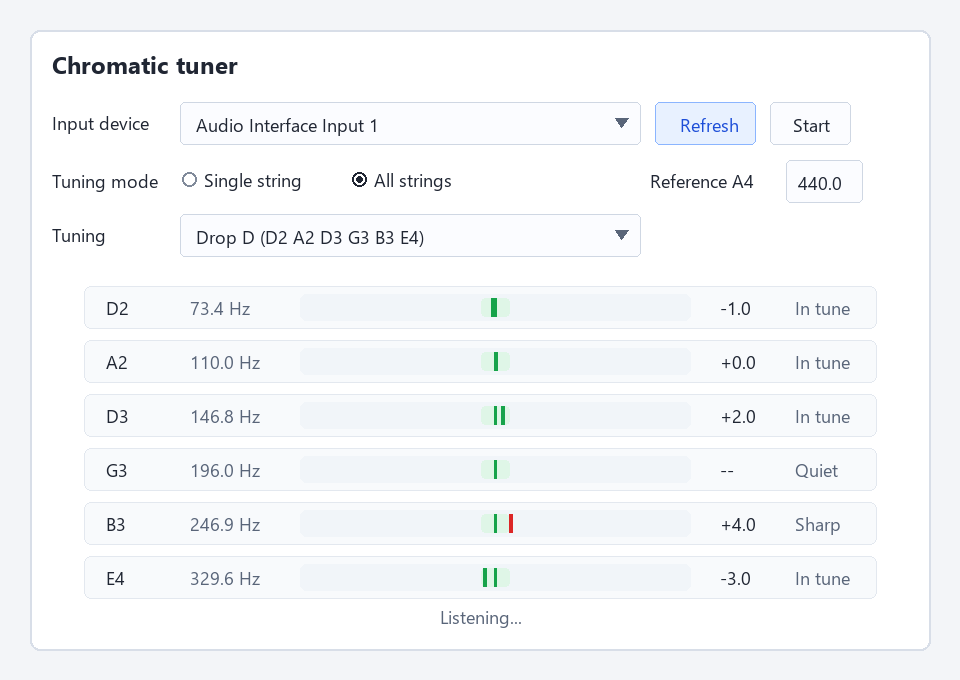

Tab Analyzer Manual
Use this guide from top to bottom the first time you run Tab Analyzer. It follows the same order as the app: open a Guitar Pro file, inspect analysis, play the tab, save notes, record practice, and use the tuner.
1. Open And Close Files
- Choose File > Open, then select a
.gp,.gp3,.gp4,.gp5, or.gpxfile. - Use the Track combo box when the file has multiple guitar tracks.
- Use Tuning to keep the file tuning or preview another built-in tuning.
- Open a previous song from File > Recent files.
- Choose File > Close file to return the app to the initial no-file state.
- Choose File > Exit to quit the app.
If a memo has unsaved changes, Tab Analyzer asks whether to save before opening, closing, or exiting.
2. Read The Screen

- The top toolbar contains file actions, Songsterr search, zoom, track selection, and tuning selection.
- The upper-left area has Analysis measures and Tab player tabs.
- The lower-left tabs show the selected measure on the fretboard, scale view, song scale view, measure notes, and memo editor.
- The right panel shows whole-song analysis, chord positions, chord finder, and recording tools.
3. Follow Measure Analysis

- Click a measure to focus it. The fretboard and explanation panes update together.
- Click a scale or chord chip inside a measure to see why that candidate was selected.
- Use the lower Measure notes tab to read scale evidence, chord evidence, and function interpretation.
- When a chord chip is selected, the right panel switches to Chord positions and shows playable shapes.
- Use Zoom or hold Ctrl and scroll to resize the analysis view.
4. Use The Tab Player

- Open the Tab player tab.
- Select one or more measures by dragging across the score.
- Press Play to start playback. If MIDI output is unavailable, the cursor still moves so you can follow the score.
- Set Repeat selection to loop the selected measures.
- Adjust Speed for slow practice.
- If the Songsterr file has YouTube metadata, use the YouTube controls and Sync offset to align playback.
5. Scale And Chord Views
| View | How to use it |
|---|---|
| Fretboard | Select a measure or segment. Green dots show the notes that matter for the current selection. |
| Scale view | Pick a root and scale type to see usable fretboard blocks. |
| Song scale view | Review the most frequent scale blocks inferred from the whole song. |
| Song analysis | Read the central scale, repeated progressions, harmonic rhythm, and function distribution. |
| Chord positions | Click a chord candidate, then filter by root string or chord category. |
| Chord finder | Select notes on the fretboard to search for matching chord names and shapes. |
6. Write Memos

- Select a measure, then open the lower Memo tab.
- Write notes in Markdown. Use this for practice comments, fingerings, or lesson notes.
- Choose File > Save memo or press Ctrl+S.
- Use Save memo as to create a separate
.mmdxmemo package. - Use Load memo to attach an existing memo package to the current tab.
7. Record Practice
- Open the right-side Recording tab.
- Select the microphone or audio interface from Input.
- Set BPM and Beats. Enable Record click if you want the metronome mixed into the saved file.
- Press F10 or the record button to record.
- Press F11 to stop.
- Press F12 to play the last recording, or use the list to play/delete older recordings.
8. Chromatic Tuner

- Choose Additional Features > Chromatic tuner.
- Select the input device. Use Refresh if you plugged in an audio interface after opening the window.
- Set Reference A4. Standard tuning uses 440.0 Hz.
- Choose Single string to tune one string at a time. Select a tuning preset, leave Target string on auto or choose the exact string, then tune until the meter is centered and the status says In tune.
- Choose All strings, then select the tuning preset such as Standard, Drop D, D Standard, DADGAD, or Open G.
- Strum all open strings and read each row from the lowest string to the highest string.
- If a string signal drops out briefly, the last stable position stays visible for a moment as Last signal.
- Mute unused strings and keep the input level clean. A noisy room, clipping, or heavy effects can reduce detection stability.